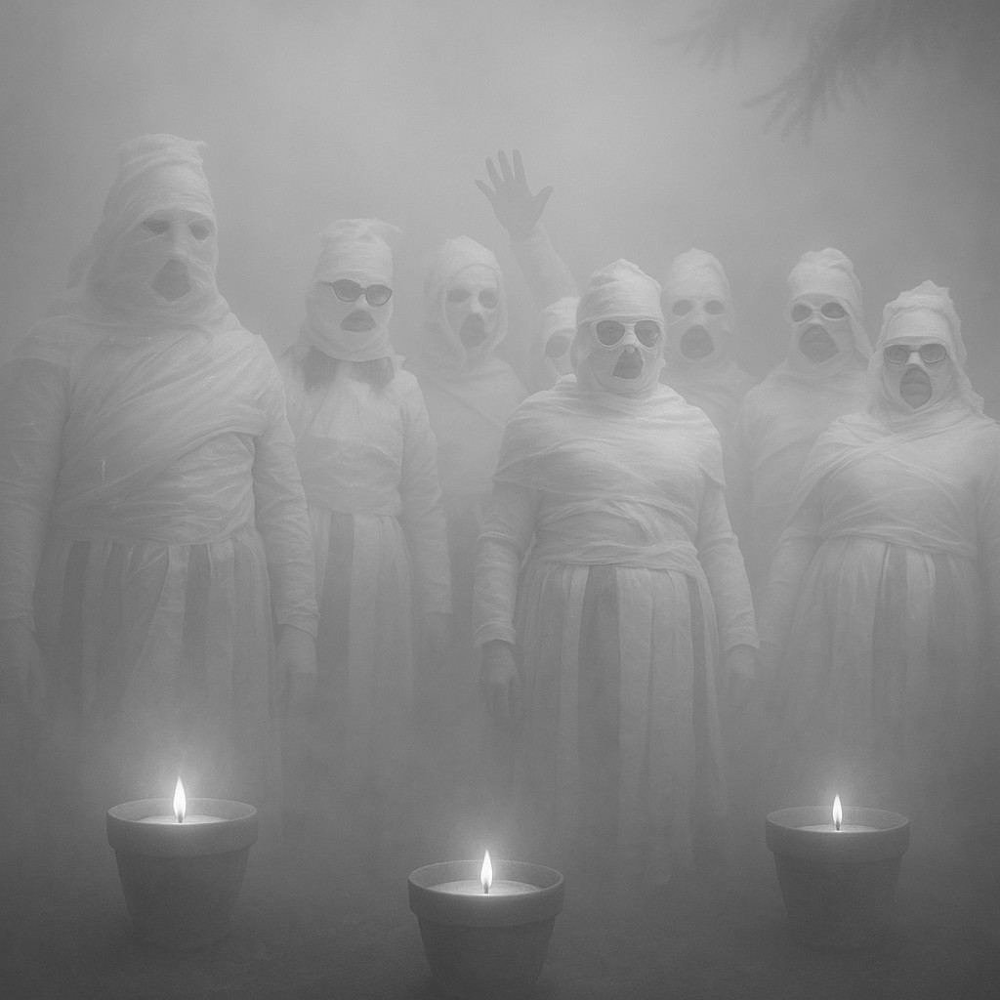

Sedelská pravda
Fakta, názory a konspirační teorie bez repelentu
Fakta, názory a konspirační teorie bez repelentu

Posledních leten v kriminalistice hraje klíčovou roli analýza drobných stop, které může pachatel zanechat na místě činu. Tento typ důkazního materiálu se označuje jako trace evidence – tedy mikroskopické nebo velmi drobné částice, které lze pomocí forenzních metod analyzovat a spojit s osobou, předmětem nebo konkrétním místem.
Tato oblast je založena na tzv. Locardově principu výměny, který říká: „Každý kontakt zanechává stopu.“ I při krátkém kontaktu může dojít k přenosu malého množství materiálu, který lze později detekovat a porovnat.
SEDLO – Úterní noc se na místním hřbitově nesla v duchu egyptského šílenství. Skupina podivně nadšených dospělých, kteří si říkají „Synové a dcery přechodu“, se oblékla do toaletního papíru a uspořádala rituální mumifikační tančírnu mezi hroby.
Podle svědků byl celý prostor osvícen svíčkami v keramických květináčích a účastníci v rozličném stádiu zabalení do papíru se pokoušeli tančit „posmrtný tanec radosti“, zatímco z přenosného reproduktoru zněly staré egyptské popové hity.
„Myslela jsem si, že se mi vrátila babička,“ sdělila nám obyvatelka Sedla, která šla na hřbitov zalít květiny a našla tam křepčící mumie. „Bylo to zvláštní, ale vlastně docela vtipné. Jen jsem se bála, že mi někdo ukradne květináč s muškáty.“
Zásah policie přišel krátce po půlnoci. Přivolaná hlídka se nejprve pokoušela mumie slovně uklidnit, ale poté, co jedna z nich začala předčítat z „Knihy mrtvých“, došlo ke zklidnění situace za použití obecní hasicí techniky.
Místo klasické pokuty bylo členům spolku uloženo vykonat veřejně prospěšné práce s výchovným přesahem. Podle radnice budou v následujících týdnech:
Mluvčí skupiny, paní H.H. (redakce jméno zná), se hájila slovy: „Měli jsme jen potřebu vyjádřit úctu k minulosti... a trochu se vyvázat ze současnosti.“
Obec zatím zvažuje, zda nevyhradit pro podobné „rituály“ severní část pole u křížku, kde už nyní parkují tři karavany a jeden papírový sarkofág.
Mezi nejčastější analyzované materiály patří:
Význam trace evidence v kriminalistice spočívá především v její schopnosti propojit osoby, předměty a místa i v případech, kdy chybějí přímé důkazy. Drobná vlákna, částice barvy nebo úlomky skla sice nemusí samy o sobě jednoznačně prokázat vinu, ale v kombinaci s dalšími nálezy mohou významně přispět k celkovému obrazu událostí. Analýza takových materiálů často umožní rekonstruovat pohyb podezřelých, potvrdit jejich přítomnost na místě činu nebo vyvrátit jejich výpovědi. Právě díky pečlivému zkoumání těchto nepatrných stop mohou vyšetřovatelé získat cenné vodítko, které by jinak mohlo zůstat skryto. V mnoha případech se tak trace evidence stává nenápadným, ale zásadním dílkem skládačky, která pomáhá odhalit pravdu.
Je to už několik let, co se digitální džungle Jumanji naposledy rozezněla hlasem bubnů. Tentokrát se ale neozývá z herní konzole, ani z deskovky zapomenuté na půdě. Země je vydává sama – tlumeně, hluboko, jako by ji někdo pomalu rozezníval zevnitř. Bubnování se šíří mezi stromy, v ozvěnách kanalizačních potrubí, dokonce i skrze kmeny na školním dvoře. Neptá se, neprosí – svolává. V novém snímku „Jumanji: Návrat do říše snů“ česká režisérka Eliška Vondrová přenáší diváky do světa, kde rostliny cítí, mravenci přemýšlejí a minulost není minulostí, ale živým organizmem.
Džungle čekala dlouho a bubny duní pro ty, kdo se už nevejdou do běžného dne. A tak se skupina dětí, která by se normálně nepotkala ani na školním hřišti, ocitá ve světě

Jumanji. Jako by se džungle sama rozhodla svolat shromáždění nejrůznějších věků a povah.
Vedle sebe tak kráčí batole s plyšovým medvídkem, ostýchavý sběratel brouků, dvojčata komunikující jen pohledem i dívka, která se nebojí ničeho, kromě vlastního stínu. Společně musí čelit nástrahám hlubokého deštného pralesa, kde čas běží pozpátku a stromům se zdají sny.
Vrchol filmu přichází ve scéně napadení tábora lidožravými mravenci velikosti dětské pěsti. Jejich organizace, precizní strategie a děsivý klid ve chvíli útoku působí, jako by se divák díval na dokument z apokalypsy přírody. Kamera dlouho zůstává bez hudby – slyšíme jen drcení listí, vrzání chitinu a tlumené výkřiky. Působivé. Děsivé. Nečekaně hluboké.
Přesto nejde o čistou akční jízdu. Vondrová pracuje s tématy ztráty, paměti a identity. A právě zde se objevuje prvek, který novinářům nedá spát – záhadná postava, kterou nikdo ve filmu fyzicky nevidí, ale všichni na ni reagují. Postava, jež nikdy nepromluví, a přesto ovlivňuje vše, co se ve světě Jumanji stane.
Na tiskové konferenci jsme se režisérky zeptali:
„Ve filmu se často mluví o Neviditelném poutníkovi, ale nakonec nebyl nikdy odhalen. Je pravda, že tuto roli ztvárnil váš manžel?“
Eliška Vondrová se na chvíli odmlčela, usmála se a řekla:
„Byl jako mech na kameni. Tichý, ale bez něj by se vše rozpadlo.“
Na další otázky už odmítla odpovídat a jen se tajemně usmívala.
Název: Sedelská pravda
Vydavatel: Sedlo Media Group, s.r.o.
Adresa: Sedlo 47, Česká republika
Email: info@sedelska-pravda.cz
Telefon: +420 123 456 789
Šéfredaktorka: Karolína Bukovská
Výkonný redaktor: Michal Bukovský
Redakce: Lucie a Bohumil Borešovi
Grafická úprava: Michal Bukovský
Tisk: Česká Tiskárna a.s., Nová Bystřice
Datum vydání:
Číslo vydání:
© 2025 Sedlo Media Group. Všechna práva vyhrazena.
Jakékoli šíření obsahu bez svolení vydavatele je zakázáno.